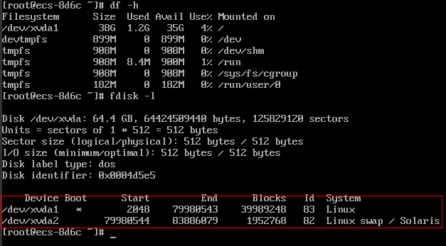
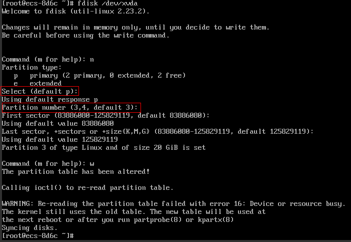
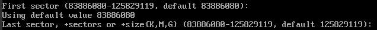
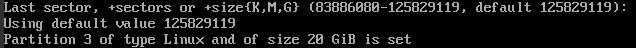
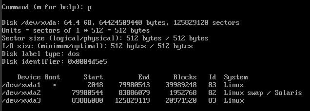
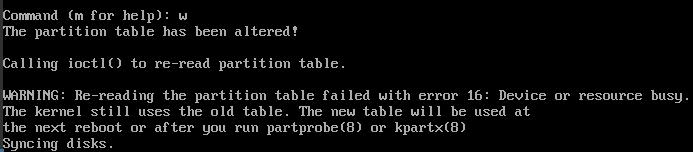
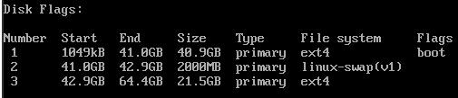
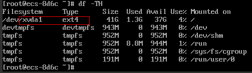
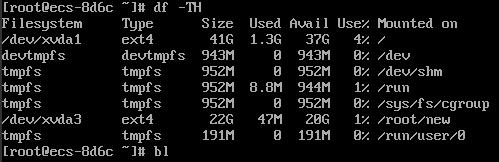
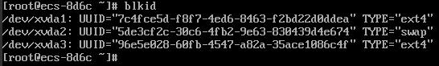

Scenarios
If the capacity of system disk partitions is inconsistent with the actual system disk capacity after an ECS is created, you can manually adjust the partitions to expand the system disk.
There are two ways to expand a system disk:
- Consider the empty partition as a new partition and attach this partition to a directory in the root partition after formatting it. For details, see this section.
- Add the empty partition to the root partition to be expanded. For detailed operations, see the following:
Procedure
This section uses an ECS running CentOS 7.3 64bit as an example. A 60 GB system disk was created with the ECS. However, the capacity of the system disk partition is displayed as only 40 GB.
To use the 20 GB capacity, performing the following operations:
- View disk partitions.
- Log in to the Linux ECS.
- Run the following command to switch to user root:
sudo su -
- Run the following command to view details about the ECS disk:
In the following command output, /dev/xvda or /dev/vda indicates the system disk.
Figure 1 Viewing details about the disk
 - Run the following command to view disk partitions:
Figure 2 Viewing disk partitions

- Create a partition for the expanded system disk capacity.
- Run the following command to switch to the fdisk mode (taking /dev/xvda as an example):
fdisk /dev/xvda
Information similar to the following is displayed:
[root@ecs-8d6c ]# fdisk /dev/xvda Welcome to fdisk (util-linux 2.23.2). Changes will remain in memory only, until you decide to write them. Be careful before using the write command. Command (m for help):
- Enter n and press Enter to create a new partition.
Because the system disk has two existing partitions, the system automatically creates the third one.
Information similar to the following is displayed.
Figure 3 Creating a new partition
 - Enter the new partition's start cylinder number and press Enter.
The start cylinder number must be greater than the end cylinder numbers of existing partitions. In this example, use the default value for the new partition's start cylinder number and press Enter. Information similar to the following is displayed.
Figure 4 Specifying the new partition's start cylinder number
 - Enter the new partition's end cylinder number and press Enter.
In this example, use the default value for the new partition's end cylinder number and press Enter. Information similar to the following is displayed.
Figure 5 Specifying the new partition's end cylinder number
 - Enter p and press Enter to view the created partition.
Information similar to the following is displayed.
Figure 6 Viewing the created partition
 - Enter w and press Enter. The system saves and exits the partition.
The system automatically writes the partition result into the partition list. Then, the partition is created.
Information similar to the following is displayed.
Figure 7 Completing the partition creation
 - Run the following command to view disk partitions:
Figure 8 Viewing disk partitions

- Run the following command to switch to the fdisk mode (taking /dev/xvda as an example):
- Run the following command to synchronize the modifications in the partition list with the OS:
partprobe
- Configure the type of the new partition file system.
- Run the following command to view the type of the file system:
Figure 9 Viewing the file system type
 - Run the following command to format the partition (taking the ext4 type as an example):
mkfs -t ext4 /dev/xvda3

Formatting the partition requires a period of time. During this time, observe the system running status and do not exit the system.
Information similar to the following is displayed:
[root@ecs-86dc ]# mkfs -t ext4 /dev/xvda3 mke2fs 1.42.9 (28-Dec-2013) Filesystem label= OS type: Linux Block size=4096 (log=2) Fragment size=4096 (log=2) Stride=0 blocks, Stripe width=0 blocks 1790544 inodes, 7156992 blocks 357849 blocks (5.00%) reserved for the super user First data block=0 Maximum filesystem blocks=2155872256 219 block groups 32768 blocks per group, 32768 fragments per group 8176 inodes per group Superblock backups stored on blocks: 32768, 98304, 163840, 229376, 294912, 819200, 884736, 1605632, 2654208, 4096000 Allocating group tables: done Writing inode tables: done Creating journal (32768 blocks): done Writing superblocks and filesystem accounting information: done
- Run the following command to view the type of the file system:
- Mount the new partition to the target directory.
If you mount the new partition to a directory that is not empty, the subdirectories and files in the directory will be hidden. It is a good practice to mount the new partition to an empty directory or a newly created directory. If you want to mount the new partition to a directory that is not empty, temporarily move the subdirectories and files in the directory to another directory. After the partition is mounted, move the subdirectories and files back.
Take the newly created directory /root/new as an example.- Run the following command to create the /root/new directory:
mkdir /root/new
- Run the following command to mount the new partition to the /root/new directory:
mount /dev/xvda3 /root/new
Information similar to the following is displayed:
[root@ecs-86dc ]# mount /dev/xvda3 /root/new [root@ecs-86dc ]#
- Run the following command to view the mounted file systems:
Information similar to the following is displayed:
Figure 10 Viewing the mounted file systems

- Run the following command to create the /root/new directory:
- Determine whether to set automatic mounting upon system startup for the new disk.If you do not set automatic mounting upon system startup, you must mount the new partition to the specified directory again after the ECS is restarted.
- If automatic mounting is required, go to 7.
- If automatic mounting is not required, no further action is required.
- Set automatic mounting upon system startup for the new disk.
Do not set automatic mounting upon system startup for unformatted disks because this will cause ECS startup failures.
- Run the following command to obtain the file system type and UUID:
Figure 11 Viewing the file system type
According to the preceding figure, the UUID of the new partition is 96e5e028-b0fb-4547-a82a-35ace1086c4f.
- Run the following command to open the fstab file using the vi editor:
vi /etc/fstab
- Press i to enter editing mode.
- Move the cursor to the end of the file and press Enter. Then, add the following information:
UUID=96e5e028-b0fb-4547-a82a-35ace1086c4f /root/new ext4 defaults 0 0
- Press Esc, run the following command, and press Enter. The system saves the configurations and exits the vi editor.
:wq
If you want to detach a new disk for which automatic mounting upon system startup has been set, you must delete the automatic mounting configuration before you detach the disk. Otherwise, the ECS cannot be started after you detach the disk. To delete the automatic mounting configuration, perform the following operations:
- Run the following command to open the fstab file using the vi editor:
vi /etc/fstab
- Press i to enter editing mode.
- Delete the following statement:
UUID=96e5e028-b0fb-4547-a82a-35ace1086c4f /root/new ext4 defaults 0 0
- Press Esc, run the following command, and press Enter. The system saves the configurations and exits the vi editor.
:wq
- Run the following command to obtain the file system type and UUID: